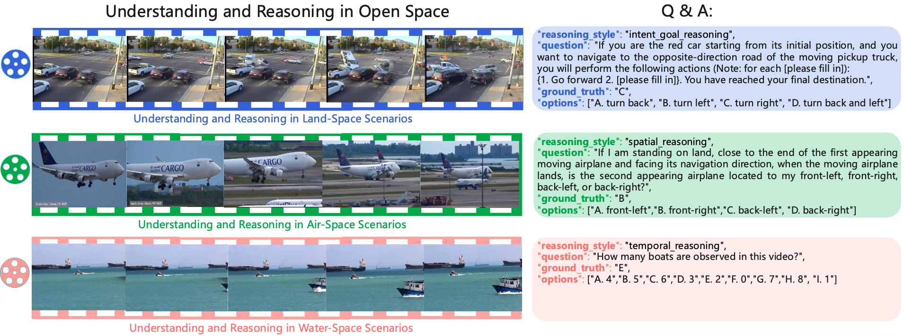
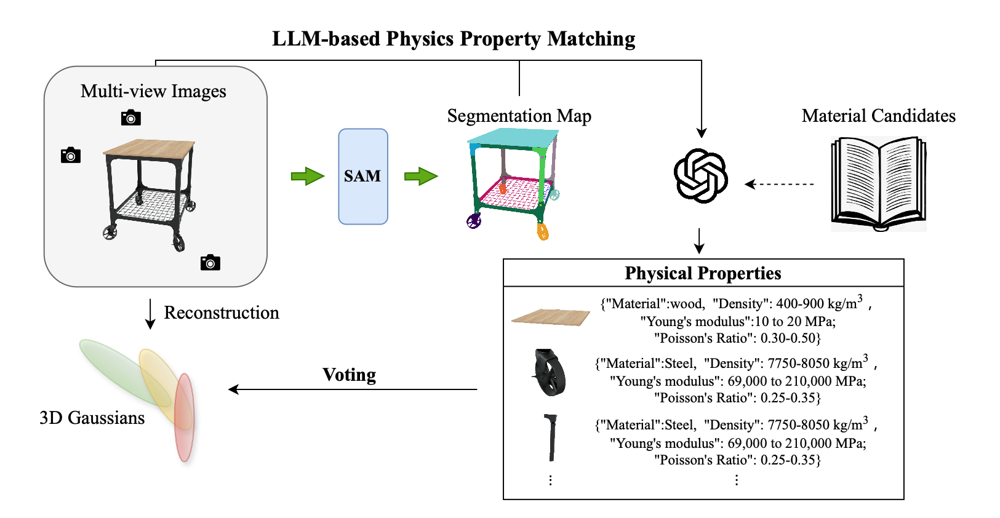

Haoyu Zhao赵皓宇Ph.D. Student
UCL Centre for Artificial Intelligence |
|
Biography
I'm a Ph.D. student at the Department of Computer Science, Universy College London (UCL), advised by Prof. Jun Wang. Before that, I received my M.Phil's degree in Artificial Intelligence from the Hong Kong University of Science and Technology (HKUST) and my Bachelor's degree from Xiamen University.
My current research interests include Large Language Models (LLMs) and Computer Vision, with a particular focus on methodologies aimed at enhancing the visual reasoning capabilities of Multimodal LLMs and the development of Multimodal LLM-based agents.
Research Topics: Multimodal LLMs, LLM Agents, 2D/3D Computer Vision + LLMs, LLM Applications
I am always open to research collaborations! Whether you'd like to talk about my work or explore potential partnerships, feel free to reach out.
News
- [12/2025] See-Control: We released our new paper See-Control, come and check it out!
- [10/2025] Starting my Ph.D journey at CS@UCL, welcome to collaborate!🎉
- [10/2025] Gaussian Property: One paper was accepted to ICCV 2025. [08/2024] Happy to announce that I have successfully defended my thesis and earned my M.Phil degree! I'm truly grateful to everyone who supported me along this journey!
- [08/2024] Our paper was awarded an Honorable Mention by ISEDA PCs.
- [05/2024] LLM-Optic: We released our new paper LLM-Optic, come and check it out!
- [07/2023] Ref-NeuS: Our paper was selected as one of the Best Paper Candidates by ICCV PCs.
- [07/2023] Ref-NeuS: One paper was accepted to ICCV 2023 (Oral).
Selected Publications [Google Scholar]
 |
See-Control: A Multimodal Agent Framework for Smartphone Interaction with a Robotic Arm.
Haoyu Zhao, Weizhong Ding, Yuhao Yang, Zheng Tian, Linyi Yang, Kun Shao, Jun Wang.
Arxiv Preprint, 2025
[Paper]
|
|  |
AccidentBench: Benchmarking Multimodal Understanding and Reasoning in Vehicle Accidents and Beyond.
Shangding Gu, Xiaohan Wang, Donghao Ying, Haoyu Zhao, Runing Yang, Ming Jin, Boyi Li, Marco Pavone, Serena Yeung-Levy, Jun Wang, Dawn Song, Costas Spanos.
Arxiv Preprint, 2025
|
|  |
GaussianProperty: Integrating Physical Properties to 3D Gaussians with LMMs.
Xinli Xu, Wenhang Ge, Dicong Qiu, ZhiFei Chen, Dongyu Yan, Zhuoyun Liu, Haoyu Zhao, Hanfeng Zhao, Shunsi Zhang, Junwei Liang, Ying-Cong Chen.
ICCV, 2025
|
 |
LLM-Optic: Unveiling the Capabilities of Large Language Models for Universal Visual Grounding.
Haoyu Zhao, Wenhang Ge, Ying-Cong Chen.
Arxiv Preprint, 2024
|
 |
Ref-NeuS: Ambiguity-Reduced Neural Implicit Surface Learning for Multi-View Reconstruction with Reflection.
Wenhang Ge, Tao Hu, Haoyu Zhao, Shu Liu, Ying-Cong Chen.
ICCV, 2023 | Oral, Best Paper Candidate
|
|
Multi-objective Optimization for Football Team Member Selection.
Haoyu Zhao, Haihui Chen, Shenbao Yu, Bilian Chen.
IEEE Access, 2021 | Outstanding Undergraduate Publication Award
|
Experiences
|
University College London (UCL) Oct. 2025 - Now Ph.D. | Supervisor: Prof. Jun Wang |
|
|
Hong Kong University of Science and Technology (HKUST) Sep. 2022 - Aug. 2024 M.Phil. | Supervisor: Prof. Yingcong Chen |
|

|
Xiamen University (XMU) Sep. 2017 - Jun. 2021 B.Eng. | Supervisor: Prof. Bilian Chen |
Honors & Awards
| ICCV Best Paper Final List, top 0.2% | 2023 |
| ISEDA Honorable Mention Paper Award | 2024 |
| HKUST Postgraduate Studentship | 2022-2024 |
| Outstanding Undergraduate Publication Award | 2021 |
| Youth Innovation Fund of Xiamen | 2020 - 2021 |
| Academic Excellence Scholarship | 2017-2018, 2019-2020, 2020-2021 |
Teaching
| 2023-2024 | Spring | Teaching Assistant in UCMP 6050 Cross-disciplinary Design Thinking, HKUST |
| 2023-2024 | Fall | Teaching Assistant in RedBird MPhil Mentoring, HKUST |